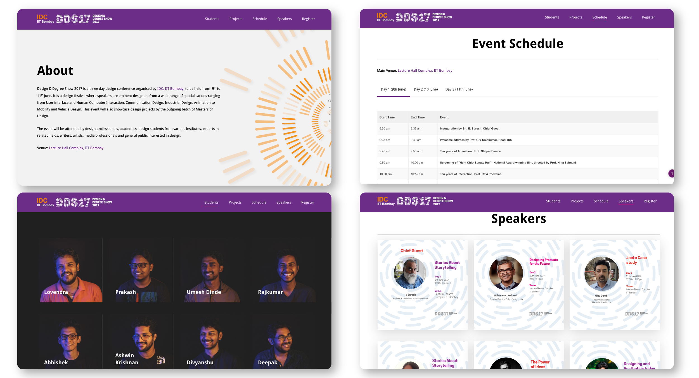
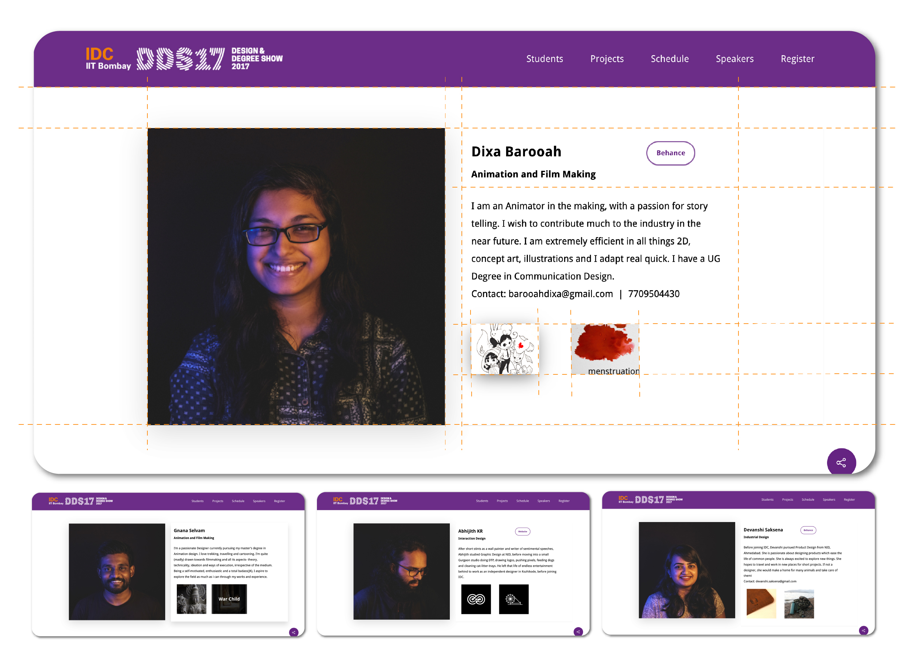
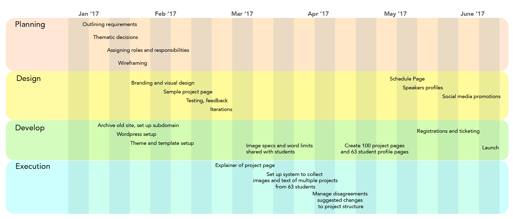

Website for DDS 2017
Design Degree Show is the annual convention of IDC School of Design, IIT Bombay. It's a platform for the graduating batch of students to showcase their work in a physical and virtual exhibition. It is organised by the graduating batch, working in committees such as events, venue, display, speakers, social media, promotions, sponsors, and digital experience (which I had taken responsibility for).
The visual design, branding, student photo-shoot and social media collaterals for the site were created by Sachit Shyam and Rishabh Pandey of Communication Design stream.
Key roles of the webiste:
- For interested participants to find information about the event.
- Target audience: industry professionals, students, design enthusiasts, design community
- To showcase students' projects, profiles
- Event schedule, speaker details
- Ticket booking, payments, modifications
The website was developed on wordpress, using a Salient theme. We went ahead with this $50 theme as it had the most versatile options for handling the kind of content we were planning.
 The primary purpose of this website is to serve as a platform for students' work to be available online forever for several years to come.
Design of the project page, therefore, was fairly important, and we had to build consensus among all students to ensure the format would do justice to their work and show it in the best light.
Once the common format was agreed upon, we had to create a data collection system, so we could generate roughly 60x3 project pages seamlessly. This included images in specific sizes and text with word limits.
In hindsight, it might have been much easier to create editor profiles for all students and enabled them to create their own project pages. It seemed like a challenge to conduct an orientation session with everybody, but it may have been worth the trouble.
But were we open to styling each page differently? We should have been. There was an unjustified need to standardise the entire website, but using a powerful CMS like wordpress, we could have created much more room for personal expression.
#Learning #DesignerEvolving
Here are a few sample project pages:
The student profile page, with all essential information, links to projects:
Summary: I was primarily responsibility for the digital experience. It involved planning, design, co-ordination, and time-line keeping, which might have been the most challenging part, considering it involved 60 friends/classmates, who also had regular coursework to focus on. Take a look at the timeline and activities involved:
The site was received well, and appreciated by staff, students and visitors. I learnt a lot about wordpress development, but would have liked to have spent more time on database structures to automate some of the work we struggled with. Working with Sachit Shyam (Branding and Visual Design), Herold (Wordpress Development), Vivek Paul Joseph (Ticketing and Event Site Management) and Abhijith (Interaction Design) was a valuable experience I will always fondly remember.